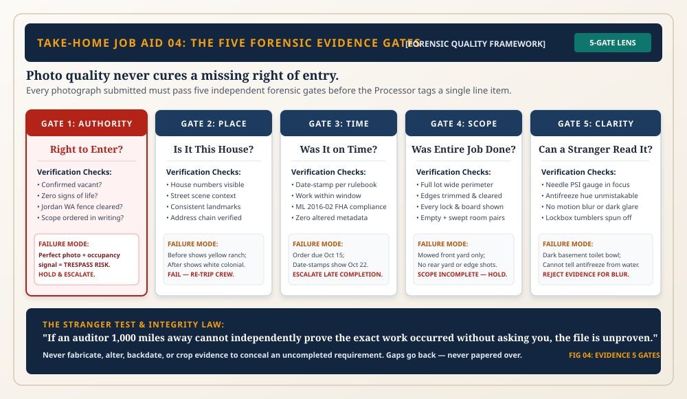

The Five Forensic Gates & The 25-Word Emergency Brake
"An auditor reviewing your file sits in an office a thousand miles away. They don't know Marcus. They don't know Elena. They only know what the camera proves. If the gauge needle is blurry, or if an occupancy signal was ignored, the file dies. When signs of life whisper, Marcus types twenty-five words and steps back to the curb."

Authority, Place, Time, Scope, Clarity
1. Authority (Master Gate): Right of entry; quality never cures missing authority. 2. Place: Matching house numbers and landmarks. 3. Time: Executed within deadline; date-stamped per rulebook. 4. Scope: Full perimeter and opposite room corners. 5. Clarity: Sharp focus on gauge needles and antifreeze hue. The Stranger Test: If an auditor cannot verify the job without asking you, it is unproven.
Signal + HOLD + Next Action ≤ 25 Words
Under field pressure, apply the 4-check rubric: 1. Concrete signal named (fridge cold, clock lit, prescription 4 days old). 2. Decision stated (HOLD). 3. Next action named (escalate occupancy check to manager). 4. ≤ 25 words total. Canonical model line (18 words): "Fridge cold, clock lit, prescription 4 days old: occupancy uncertain. HOLD work, escalate to manager for occupancy check."
The Law Beats the Order; The Order Beats the SOP
Layer 1 (The Law): Federal/state statutes, court rulings (Jordan), municipal codes. A client order cannot authorise illegal entry. Layer 2: Client contract and specific work order. Layer 3: Company SOP (who marks RFO). Layer 4: Typical practice. When instructions conflict: HOLD & ESCALATE to the designated approver.